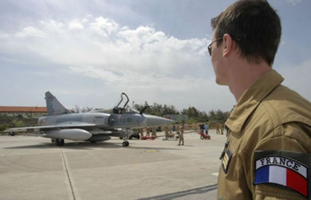
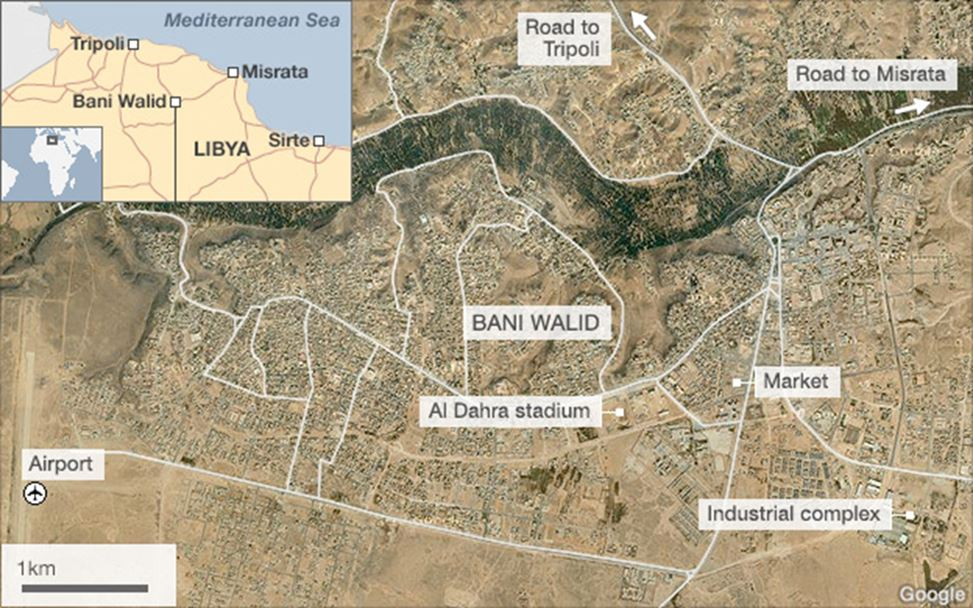
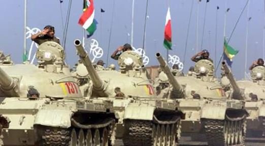
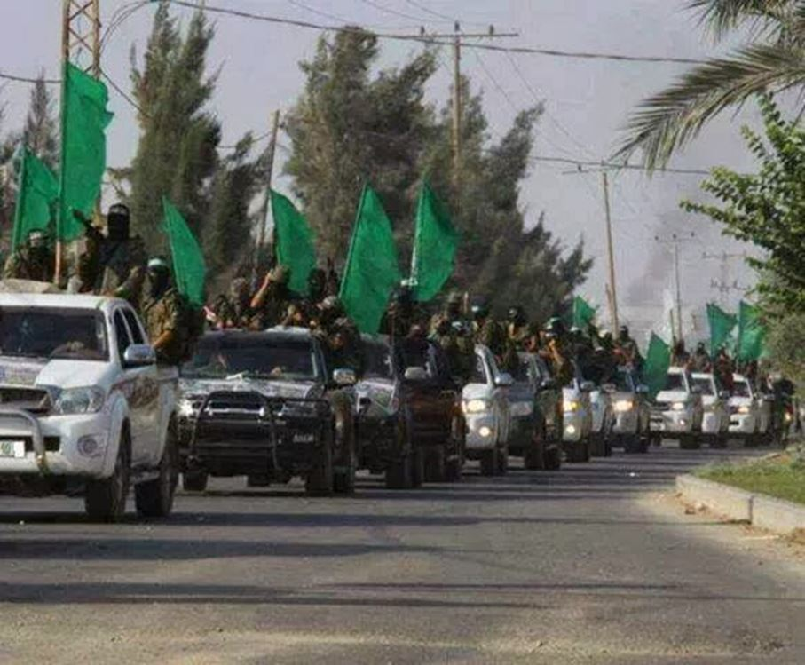

2011. Cela semble déjà loin pour les amnésiques, mais c’est pourtant si proche. Ces cinq années qui nous en séparent ne font que rapprocher l’Europe et le Moyen-Orient des conséquences du coup d’Etat libyen dont Sarkozy, lors d’un plateau TV datant de septembre 2016, osa dire, défiant Pujadas, le bon sens commun, et la décence la plus élémentaire, que « depuis Lawrence d’Arabie, on a évité un drame entre l’Orient et l’Occident ».
La Libye, cela semble loin. Et pourtant, comme je l’avais déjà indiqué dans un précédent article, moins de 300 km séparent Tripoli de Lampedusa.
Plusieurs grands prédateurs essayent de prendre le contrôle de 50 milliards de barils. 120.000 Libyens en sont morts. 3 millions de Libyens ont été d’abord délogés par 6 mois de bombardements otaniens puis par des affrontements constants entre l’AQMI et l’EI. Un pays d’une superficie de 1.760.000 km2 s’est partiellement transformé en un insondable arsenal salafiste menaçant de fait et la bande sahélo-saharienne et notre Vieux Continent déjà bourré de cellules dites dormantes ou ... semi-dormantes vu les évènements de ces derniers temps. C’est sans compter l’impact néfaste de ces zones d’hyperconcentration islamiste pour l’Irak, un pays presque entièrement détruit, et pour la Syrie qui même exténuée, anémiée, rabaissée, continue à résister. Imagineriez-vous un leader occidental à la place d’Assad ? Moi non. Tous auraient fui vers les USA ou l’Australie. Tous. Sans même se retourner.
Le drame humain et économique – en somme, le drame civilisationnel – de la Libye s’est fait à travers sa quadruple, voire sa quintuple partition. Ainsi retrouve-t-on plusieurs Libye (S) avec :
La Tripolitaine historique au Nord-Ouest. Elle est prise en tenaille par, d’un côté, les islamistes de Tripoli, de l’autre, les Frères Musulmans de Misrata.
Le golfe de Syrte, c’est-à-dire le Centre, est pollué par Daesh.
Le Nord-Est, c’est-à-dire la Cyrénaïque, est tenu par le général Haftar.
Le Sud est quant à lui coupé en deux avec sa partie ouest qui se trouve sous le contrôle des Touaregs. Ces derniers ‘verdissent’ notoirement. Pour preuve : le 17 mai 2016, un ancien chef militaire touareg de Fezzan, Ali Kana Souleymane, a organisé une réunion des tribus qui n’est autre qu’un appel à la réunification au nom de la formation d’une armée du Sud fidèle aux legs spirituels du Guide de la Jamahiriya. Paris Match a relayé l’info quelques jours plus tard précisant au passage que cette initiative concernait également les Toubous qui devaient donc se défaire de leurs accointances pro-Hafter.
A l’heure où j’écris cette introduction, l’évincement surprise de Fayez el-Sarraj, chef de la GNA (pour rappel, gouvernement d’union national libyen, le seul à être reconnu par l’ONU) par Khalifa al-Ghowel, chef du CGN (congrès général national) qui est le successeur du CNT (conseil national de transition) a démontré, de un, que l’ONU vient de perdre définitivement le contrôle de la situation, de deux, que celle-ci se complique vu l’extrême ambiguïté du personnage d’Haftar dont certains disent qu’il s’agirait d’un homme de la CIA et que d’autres sont sur le point de sanctifier voyant en lui un libérateur en puissance.
Le général Khalifa Haftar al-GhowelReste que le soutien inconditionnel des USA à l’égard de cet homme et le contrôle qu’il exerce sur l’accès aux puits pétroliers est en effet plus que suspect. Plus on s’applique à cerner la conjoncture libyenne, plus on constate, passez-moi cette familiarité, qu’une chatte n’y retrouverait pas ses petits. Il convient donc de dépasser cette dialectique inextricable en trouvant une entité qui se situerait au-delà et qui tiendrait compte des réalités tribales du pays.
Franck Pucciarelli, Coordinateur Europe chez CRI Comité Révolutionnaire International, avait déjà parlé de cette entité dans une précédente interview intitulée « Libye : vers la fin du joug américano-salafiste ». Il analysera ici, plus en détails, la nature de cette Résistance Verte ainsi que les circonstances, tant favorables qu’incertaines, dans lesquelles son action se réaliserait.
Françoise Compoint. « La Libye est en ce moment tiraillée entre les ambitions du général Hafter, chef du gouvernement non reconnu de Libye, homme des Américains, ancien proche de Kadhafi qui a fini par le trahir, et celles du GNA, c’est-à-dire le gouvernement d’unité nationale soutenu par l’ONU et, jusqu’ici, par la France. La prise du Croissant pétrolier par les bataillons d’Haftar n’a manifestement fait que renforcer la division du pays. Dans votre dernier compte rendu, vous évoquez cependant le récent revirement du ministère de la Défense français qui, intérêts obligent, se rangerait maintenant du côté de Haftar. Vous évoquez aussi la prise sans cesse repoussée de Syrte par le GNA et le piètre état dans lequel celui-ci se trouve suite à la pré-obtention d’un contrat pétrolier avec la Turquie, le Qatar et Israël. Au beau milieu de ce partage chaotique du pouvoir, quelle place accorder aux groupes résistants restés fidèles à l’héritage kadhafiste ?
Franck Pucciarelli. Elle est importante. Tout d'abord, il s’agit de 3 millions de Libyens qui refusent de reconnaître la " révolution du 17 février 2011 " des milices takfiristes soutenue et financée par Sarkozy. Il s’agit aussi des tribus berbères de l'Ouest financées quant à elles par Israël. Elles sont en exil depuis 2011. L’ensemble représente plus de la moitié de la population libyenne. Cet exil est une forme de résistance face à l'occupant qui ne peut donc pas en accaparer les membres.
Une grande partie du Sud libyen est restée fidèle à la Jamahiriya et l'on peut par conséquent la considérer comme étant une zone libérée.
Les tribus du Sud sont essentielles à l'unité nationale1.
Bani Walid qui se situe à 80 km de Tripoli et qui est le fief de la plus grande tribu libyenne, celle des Warfalla, voit le drapeau vert (drapeau national de la Jamahiriya Arabe Libyenne) flotter a nouveau depuis 1 an sur ce bastion kadhafiste.
Et il y a le haut conseil des tribus libyennes historiques qui considèrent que la Jamahiriya Arabe Libyenne est occupée. C'est aussi une des raisons pour laquelle toute tentative de construction d'un Etat voulu par l'ONU ne fonctionne pas et ne fonctionnera pas. C’est le 11 septembre, lors de la prise du croissant pétrolier par le maréchal Haftar, que les tribus libyennes ont derechef démontré leur primordialité. Les gardes pétroliers qui étaient sous les ordres de Jadran et donc du GNA ont laissé les bataillons de Haftar prendre la zone après en avoir reçu l'ordre par leurs chefs de tribus respectifs.
F.C. Qui compose la Résistance verte ? Y-a-t-il des volontaires issus d’Etats limitrophes et/ou plus éloignés ? A-t-elle déjà élaboré une stratégie précise pour la libération du pays ?
F.P. Cette Résistance est tout d'abord composée d'anciens membres des comités révolutionnaires libyens. Depuis l'invasion de l'OTAN, ils travaillent en Libye à couvert pour empêcher la création d'un Etat qui consoliderait la colonisation du pays. Cette force de l'ombre est partout, entend tout, voit tout. Elle est incorruptible car ses membres sont animés par une idéologie puissante. Ils sont en quelque sorte les gardiens du Livre vert, du principe de démocratie directe.
A cela il faut ajouter les anciens militaires de la Jamahiriya Arabe libyenne, c’est-à-dire plusieurs milliers d'hommes prêts à rejoindre leur ancienne brigade le jour J. C’est sans compter des milliers de soldats qui ont intégrés l'armée nationale libyenne (Haftar) mais qui, le moment venu, rejoindront le peuple pour la libération de la Jamahiriya et sur la demande de leurs chefs de tribus.
Le général Ali Kana, ancien général sous Kadhafi, a réuni l'ensemble des tribus libyennes du Sud et leur a demandé que les jeunes quittent leurs milices pour rejoindre l'armée nationale du Sud (réunion le 17 mai 2016 près de Ubari). Il est en train de restructurer le corps militaire et collabore avec d'anciens généraux qui comme lui étaient partis en exil en 2011.
L'armée de la Jamahiriya est en train de se reconstituer. Elle se mettra aux ordres du haut conseil des tribus libyennes historique et donc de Saif al islam Kadhafi qui en est le représentant depuis septembre 2015. Au sein du CRI (Comité révolutionnaire international, NDLR), bon nombre de jeunes Africains mais aussi d’Européens sont prêts à s'engager auprès du peuple libyen pour la libération du pays.
Nous sommes en train d’observer et de finaliser l’éventuel afflux prochain de centaines de volontaires. Les bienfaits de Mouammar Kadhafi en Afrique ont pour effet que des milliers d'Africains veulent participer à la libération de la Jamahiriya. Le Guide avait beaucoup fait pour eux.
Et pour répondre à une partie de votre question, il y a bien évidemment une stratégie en place mais je n'en ai pas le détail pour des raisons évidentes de sécurité.
F.C. Y-a-t-il des facteurs externes qui pourraient faciliter ou, au contraire, rendre plus compliquée la réalisation de son objectif ?
F.P. Il est évident que les pays de l'OTAN ne peuvent concevoir une libération de la Jamahiriya car leur échec serait alors avéré et cuisant. C'est pour cela que la Résistance verte attend le moment opportun. Il faudrait aussi noter la présence de centaines de cellules dormantes dans les villes occupées. Depuis le début de l'année, via internet, elles lancent des appels visages couverts en appelant le peuple à se préparer à la lutte armée pour la libération du pays.
Cette Résistance populaire a bien sûr besoin d'aide.
Elle bénéfice actuellement du soutien de l'Égypte qui autorise les studios de Green TV sur son sol. La chaîne de la Jamahiriya Arabe Libyenne peut ainsi émettre sur la Libye et informer le peuple libyen.
Les Libyens attendent beaucoup du peuple russe et de son président, Vladimir Poutine. Il est essentiel et même stratégique pour la Russie d'encourager l'expression réelle du peuple libyen, voire de contribuer en pratique à l’application de ce droit.
La libération de la Jamahiriya mettra fin a la présence des milices takfiristes par leur neutralisation. En effet, plusieurs milliers de membres de Daesh ont quitté la Syrie pour gagner la Libye, cela avec l'appui et la complaisance totale des autorités libyennes reconnues par l'ONU. Ces forces menacent de fait la souveraineté syrienne dans les mois et les années à venir mais aussi celle de l’Égypte et de l'Algérie.
La Russie peut aider le peuple libyen à faire valoir le droit de ces millions d'exilés et appeler, auprès des Nations Unis, à un référendum au niveau national. Il n’y a pas d’autres solutions si l’on veut éviter de nouvelles effusions de sang.
F.C. Les médias occidentaux passent sous silence la renaissance de la Jamahiriya. Serait-ce parce qu’ils sous-estimeraient ce mouvement ?
F.P. Les médias occidentaux sont responsables de l'occupation de la Jamahiriya. Ces médias, en 2011, reprenaient en boucle, sans aucun effort de vérification, les comptes rendus de l'OTAN et les rapports de l'Observatoire des droits libyens dont le seul et unique membre n'a jamais quitté son Grand Hôtel parisien. Ils allaient même jusqu’à convoiter les paroles mensongère du philosophe BHL. A l'époque, bon nombre d’observateurs étrangers étaient en Libye et dénonçaient la propagande otanienne. Les médias occidentaux les traitaient en complotistes. Pourtant, le dernier rapport des parlementaires anglais vient de révéler l’ampleur de la désinformation qui avait été pratiquée par ces journalistes pour justifier l'invasion et l'occupation de la Libye. Pour ces médias, parler de la situation réelle en Libye reviendrait à avouer leurs mensonges.
Néanmoins, depuis peu, certains d’entre eux se rapprocheraient de nous et s'intéresseraient, disent-ils, à l'importance croissante des kadhafistes.
Mais comment leur faire confiance ?
Ils sont responsables de par leur mensonge de la mort de milliers de Libyens. Des familles ont été brisées à tout jamais, un pays riche par le passé est aujourd'hui anéanti. Ces médias occidentaux ne sont rien pour la Résistance. Ils ne représentent que les actionnaires qui les font vivre, ceux-là mêmes qui tentent de voler le pétrole libyen ».
Commentaire de la rédaction. Je n’ai peur de rien, avait dit Kadhafi lors du discours de Palmarium (1972). Si vous craignez Dieu, vous ne craindrez plus rien. Kadhafi n’a plus à se justifier. L’Histoire lui a déjà donné raison. Elle n’attend maintenant plus qu’une chose : juger, implacablement et définitivement, ceux qui ont anéanti le miracle de l’Afrique comme ils avaient anéanti, quelques années auparavant, selon un scénario identique, la Yougoslavie. Kadhafi, tout comme Milosevic, n’avait eu qu’un tort : avoir trop fait confiance aux faucons atlantistes ce qui a permis l’infiltration, dans les plus hautes instances du pouvoir, d’islamistes à charge. Puis vint un coup d’Etat ou « une Révolution » pour les bien-pensants avec l’installation d’un gouvernement de transition vers ... Les mots me manquent. Ce qui importe aujourd’hui, c’est la désomalisation de la Libye avec l’appui des tribus et, ultérieurement, la restauration des trois grandes confédérations tribales, seules garantes de stabilité : celle de la Cyrénaïque, celle de la Tripolitaine et celle du Sud. Le seul vrai facteur qui puisse faciliter la libération du pays, c’est la déstabilisation interne des USA. Celle-ci pourrait être envisageable à compter du jour des élections qui s’annoncent.
F.C.
1voir Bernard Lugan, Histoire et géopolitique de la Libye. L'Afrique réelle, 2015
Partager cette page